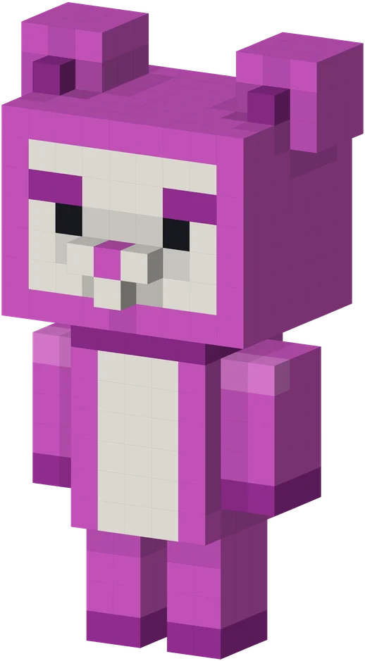
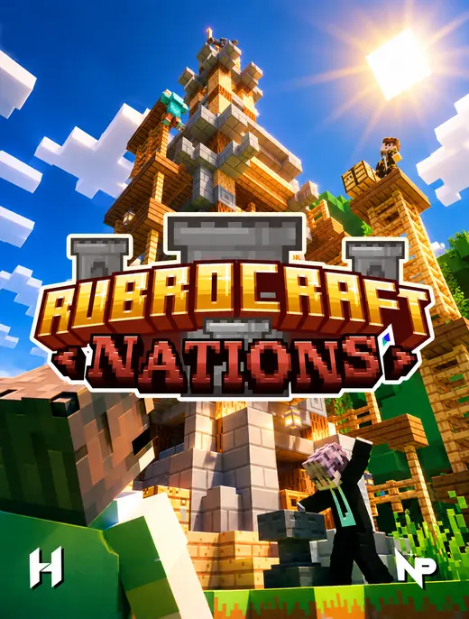
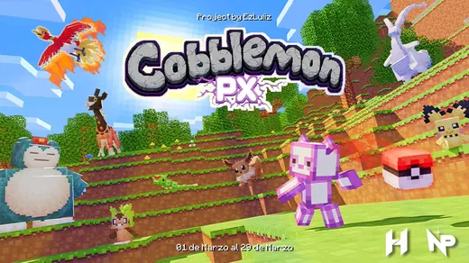
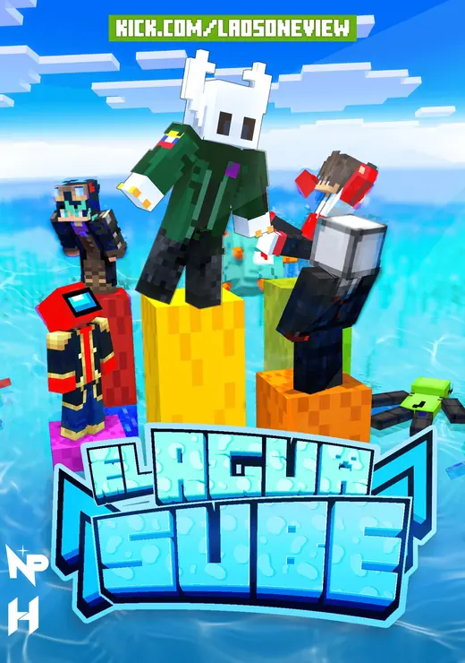
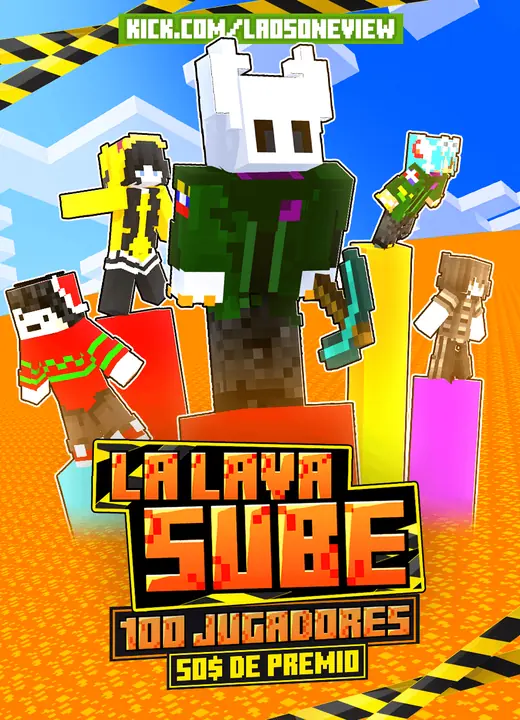
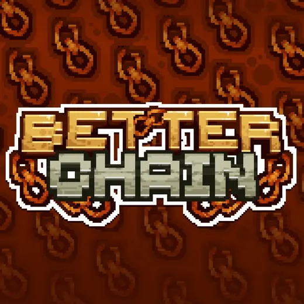
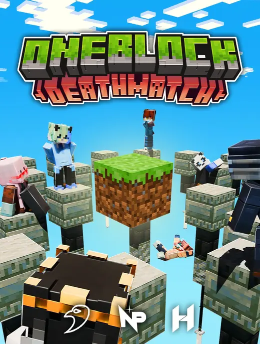
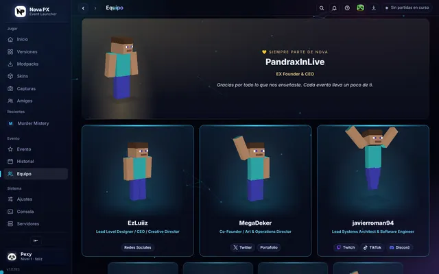
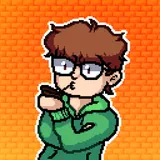

Jugar sin configurar nada
El evento trae su versión y su loader (Vanilla, Fabric, Quilt, Forge o NeoForge). Si falta Java, el launcher lo instala. Cada evento va en su propia carpeta.

Nova PX descarga la versión, el loader y los mods de cada evento de la comunidad, los comprueba y abre Minecraft por ti. Además organiza tus modpacks, tus skins y tus amigos.

Lo instalas una vez. Después, los eventos, las noticias y el propio launcher se actualizan solos.
El evento trae su versión y su loader (Vanilla, Fabric, Quilt, Forge o NeoForge). Si falta Java, el launcher lo instala. Cada evento va en su propia carpeta.
Biblioteca con Modrinth, archivos .mrpack, modpacks de CurseForge y el catálogo de FTB. Importa tus perfiles de Prism, MultiMC, ATLauncher, CurseForge y Modrinth App.
Vanilla desde la 1.0 hasta la última, con snapshots aparte. Puedes fijar la versión exacta del loader y elegir RAM, Java y cuenta para cada modpack.
Mira tu skin en 3D y cambia la skin y la capa desde el launcher. Inicia sesión con Microsoft o con un nick local, y cambia entre varias cuentas.
Noticias, historial de eventos y equipo dentro del launcher, avisos en el escritorio antes de empezar y tu partida en Discord con Rich Presence.
Del tema Nova con neón a estilos clásicos como Windows XP y Windows 7. Cambia el aspecto del launcher cuando quieras.
Nova PX organiza eventos de Minecraft con streamers y jugadores desde 2023. Estos son algunos de los últimos; el historial completo está en el launcher.

Survival semi-vanilla de tres semanas, con cuatro equipos equilibrados y mecánicas propias.

Cuatro semanas con streamers y jugadores, eventos semanales y progresión ambientada en Cobblemon.

Cien jugadores sobreviven mientras el agua sube cada minuto. Solo uno queda en pie.

Cien jugadores consiguen recursos mientras la lava sube hasta la capa máxima.

Evento organizado por Nova PX.

Evento organizado por Nova PX.
Algunos eventos usan mods propios. Para que no queden sueltos en tu carpeta, el launcher los guarda cifrados y solo los prepara cuando juegas.
https..px cifrados con AES-256-GCM, con una llave derivada de la contraseña del evento.mods del evento.Lo que no hace: mientras Minecraft está abierto, los mods descifrados existen en tu disco, porque el juego los necesita. El cifrado evita que queden a la vista, pero no hace imposible copiarlos. Lee los detalles en SEGURIDAD.md.

Agrega amigos por su nick, mira quién está en línea y, si ellos lo comparten, a qué juegan. Chatea con ellos sin salir del launcher.
Por privacidad, la sesión de amigos se guarda cifrada con el almacén seguro de tu sistema. Si tu equipo no tiene uno, la función de amigos no se activa.
Pexy es el panda de bloques de Nova PX. El diseño original es el panda rosa de MegaDeker; en el armario también puedes ponerle la sudadera morada con la estrella nova. Pasea por el launcher, te avisa de lo que pasa y crece contigo.
Nivel 1
Este Pexy se guarda solo en este navegador. Todavía no se sincroniza con el Pexy de tu launcher.
Capturas de la versión 1.0.193 con el tema Nova. Inicio, Evento y Modpacks usan perfiles de ejemplo; Historial y Equipo muestran los datos reales de la comunidad.
Gratis y de código abierto. Descarga siempre desde estos enlaces oficiales.
Versión 1.0.193 · Todas las publicaciones en GitHub
El instalador de GitHub todavía no está firmado digitalmente, así que Windows SmartScreen puede mostrar ese aviso. Si lo descargaste desde el enlace de arriba, pulsa Más información y luego Ejecutar de todas formas. Si prefieres no ver el aviso, instala desde Microsoft Store.
Desde Microsoft Store en Windows, o con el instalador de GitHub para Windows y Linux.
Con tu cuenta de Microsoft, o con un nick local si no tienes Minecraft premium.
Pulsa Jugar. El launcher descarga lo que falte y abre el evento por ti.
Sí. El launcher es gratuito y de código abierto, con licencia MIT. No incluye Minecraft: para servidores premium necesitas tener el juego.
Puedes iniciar sesión con tu cuenta de Microsoft o jugar con un nick local. Algunos servidores solo aceptan cuentas premium.
El código está abierto en GitHub y el launcher también se distribuye en Microsoft Store. Tu sesión de Microsoft se guarda cifrada con el almacén seguro de tu sistema y nunca se envía a Nova PX.
La versión de Microsoft Store se actualiza desde la Tienda. El instalador de GitHub busca versiones nuevas y se actualiza solo.
Por ahora hay versiones para Windows y Linux.
No. Nova PX es un proyecto independiente de la comunidad. Minecraft es una marca de Mojang Studios.
Avisamos los eventos y quiénes participan en X, y damos soporte en Discord.

PandraxInLive, exfundador y CEO. Gracias por todo lo que nos enseñaste. Cada evento lleva un poco de ti.